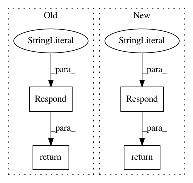

319be21abe4e5df8be8a2026e76fcd7f87d06f70,tensorboard/plugins/profile/profile_plugin.py,ProfilePlugin,capture_route,#ProfilePlugin#Any#,429
Before Change
request, {"result": "Capture profile successfully. Please refresh"},
"application/json")
except tf.errors.UnavailableError:
return http_util.Respond(request, "Empty trace result",
"text/plain", code=404)
def get_plugin_apps(self):
return {
TOOLS_ROUTE: self.tools_route,
After Change
duration = int(request.args.get("duration"))
except TypeError:
// Returns code=200 to show error message in UI.
return http_util.Respond(request, {"error": "invalid duration."},
"application/json", code=200)
is_tpu_name = request.args.get("is_tpu_name") == "true"
workers_list = ""
if is_tpu_name:
try:
In pattern: SUPERPATTERN
Frequency: 3
Non-data size: 4
Instances
Project Name: tensorflow/tensorboard
Commit Name: 319be21abe4e5df8be8a2026e76fcd7f87d06f70
Time: 2019-05-07
Author: qiuminxu@google.com
File Name: tensorboard/plugins/profile/profile_plugin.py
Class Name: ProfilePlugin
Method Name: capture_route
Project Name: tensorflow/tensorboard
Commit Name: 1e7af1285c2c506d1c73f6e6cb612a26b5cf3da6
Time: 2017-10-19
Author: nfelt@users.noreply.github.com
File Name: tensorboard/backend/application.py
Class Name: TensorBoardWSGI
Method Name: _serve_plugins_listing
Project Name: tensorflow/tensorboard
Commit Name: 1780833b30d953509200bf9560be2ba42fabe9ff
Time: 2020-01-06
Author: cais@google.com
File Name: tensorboard/plugins/debugger_v2/debugger_v2_plugin.py
Class Name: DebuggerV2Plugin
Method Name: serve_runs